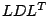

One of the hardest challenges in modern eigenvalue computation is the numerical solution of large-scale eigenvalue problems, in particular those arising from quantum physics such as the Anderson model of localization [4]. Typically, these problems require the computation of some interior eigenvalues and eigenvectors for systems which have up to several million unknowns due to their high spatial dimensions. Furthermore, their underlying structure involves random perturbations of matrix elements which invalidates simple preconditioning approaches.
We propose an efficient preconditioning algorithm for this Anderson model of localization [6]. The model requires the computation of a few interior eigenvalues and their associated eigenvectors for large scale, sparse, real and symmetric indefinite matrices. Our preconditioning approach for the associated shift-and-invert systems is based on maximum weighted matchings [3,5] and algebraic multilevel, inverse-based incomplete  factorizations [1,2]. Our numerical examples indicate that recent algebraic multilevel preconditioning solvers can accelerative the computation of the underlying large-scale eigenvalue problem by several orders of magnitude compared with previous approaches [4,6].
[1] M. Bollhöfer and Y. Saad, Multilevel preconditioners constructed from inverse-based ILUs, SIAM J. Sci. Comp., to appear (2006).
[2] M. Bollhöfer and O. Schenk, ILUPACK volume 2.0 -- preconditioning software package for symmetrically structured problems (May 2005).
[3] I. S. Duff and S. Pralet, Strategies for scaling and pivoting for sparse symmetric indefinite problems, Technical Report TR/PA/04/59, CERFACS (2004).
[4] U. Elsner, V. Mehrmann, F. Milde, R. A. Römer, M. Schreiber, The Anderson model of localization: a challenge for modern eigenvalue methods, SIAM J. Sci. Comp. 20 (1999) 2089-2102.
[5] M. Hagemann, O. Schenk, Weighted matchings for the preconditioning of symmetric indefinite linear systems, SIAM J. Sci. Comp., to appear (2006).
[6] O. Schenk, M. Bollhöfer, R. Römer, On Large Scale Diagonalization Techniques For The Anderson Model Of Localization, SIAM J. Sci. Comp., to appear (2006).